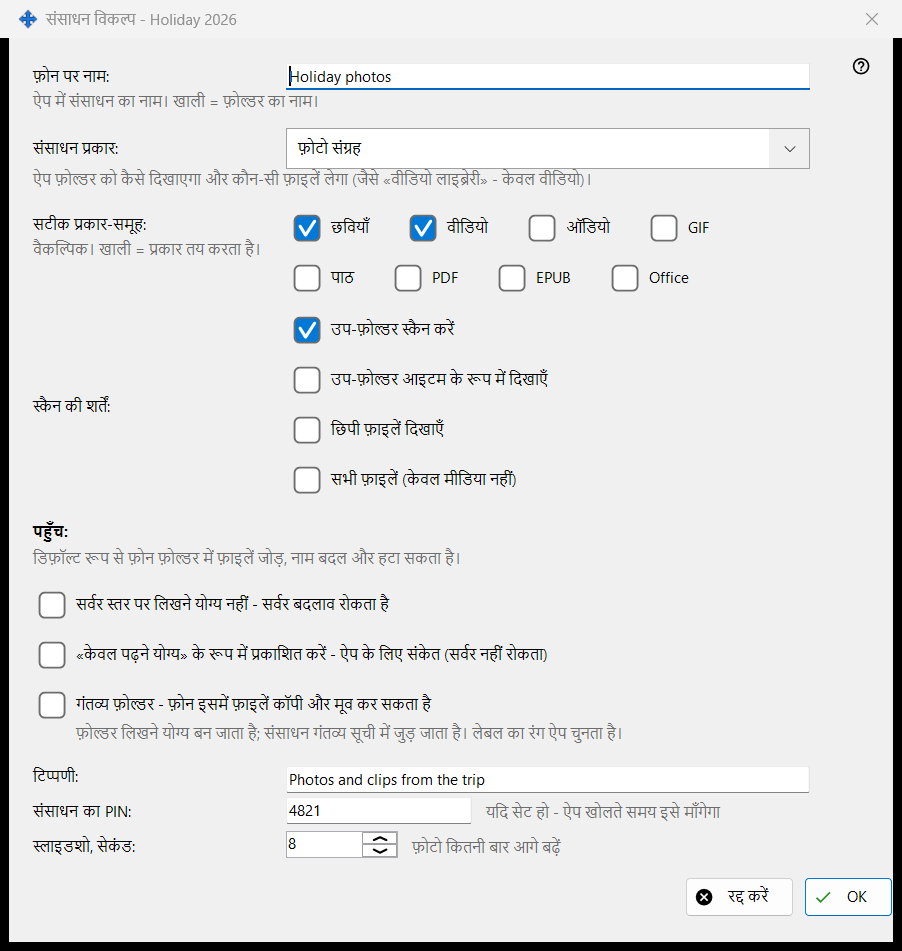
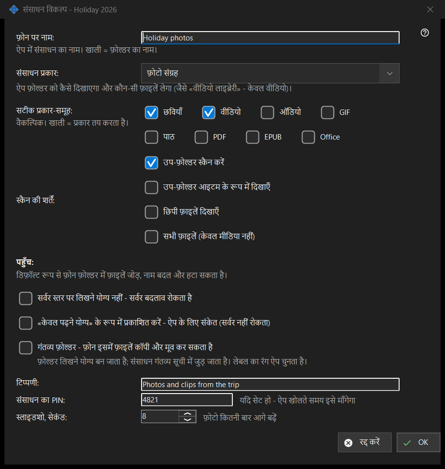

संसाधन विकल्प
यह किस लिए है
एक साझा फ़ोल्डर के विकल्प: फ़ोन पर उसका नाम, प्रकार, कौन-सी फ़ाइलें दिखें, कौन उन्हें बदल सकता है और कुछ अतिरिक्त चीज़ें। यह मुख्य विंडो में संपादित करें से, फ़ोल्डर की पंक्ति से और संसाधन विज़ार्ड से खुलता है। असली शीर्षक फ़ोल्डर के नाम पर समाप्त होता है।


इस क्रम में
- वह नाम तय करें जो फ़ोन दिखाएगा।
- संसाधन का प्रकार या सटीक मीडिया-समूह चुनें।
- स्कैन की शर्तें तय करें।
- पहुँच चुनें।
- टिप्पणी, PIN और स्लाइडशो अंतराल के लिए उन्नत विकल्प खोलें।
- ठीक दबाएँ।
तत्व
नाम और प्रकार
फ़ोन पर नाम: ऐप में फ़ोल्डर का नाम है; खाली का मतलब फ़ोल्डर का अपना नाम। संसाधन प्रकार: में सामान्य फ़ोल्डर, ऑडियो लाइब्रेरी, वीडियो लाइब्रेरी, फ़ोटो संग्रह और दस्तावेज़ मिलते हैं। सटीक प्रकार-समूह: सटीक किस्में चुनता है (छवियाँ, वीडियो, ऑडियो, पाठ, सभी फ़ाइलें); खाली का मतलब है कि प्रकार तय करता है।
स्कैन की शर्तें
उप-फ़ोल्डर स्कैन करना, उप-फ़ोल्डर को आइटम के रूप में दिखाना, छिपी फ़ाइलें दिखाना और सभी फ़ाइलें दिखाना, केवल मीडिया नहीं।
पहुँच
डिफ़ॉल्ट रूप से फ़ोन फ़ोल्डर में फ़ाइलें जोड़ सकता है, उनके नाम बदल सकता है और उन्हें मिटा सकता है। केवल पढ़ने योग्य असली ताला है: सर्वर बदलाव अस्वीकार करता है। केवल पढ़ने का संकेत ऐप से बस संपादन के बटन छिपवाता है; सर्वर कुछ नहीं रोकता। गंतव्य फ़ोल्डर फ़ोन से कॉपी और मूव की गई फ़ाइलें ले सकता है; वह लिखने योग्य हो जाता है और प्राप्तकर्ताओं की सूची में आ जाता है, और उसका रंग ऐप चुनता है।
उन्नत विकल्प
एक टिप्पणी (वैकल्पिक), संसाधन के लिए PIN (संसाधन खोलते समय ऐप उसे माँगता है) और सेकंड में स्लाइडशो अंतराल। पुष्टि करने पर सेटिंग सर्वर को भेजी जाती हैं।
प्रबंधक सेटिंग · SFTP साझाकरण सेटिंग · एक्सचेंज सर्वर सेटिंग